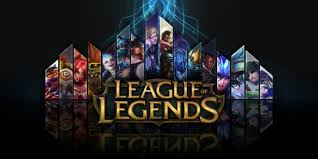
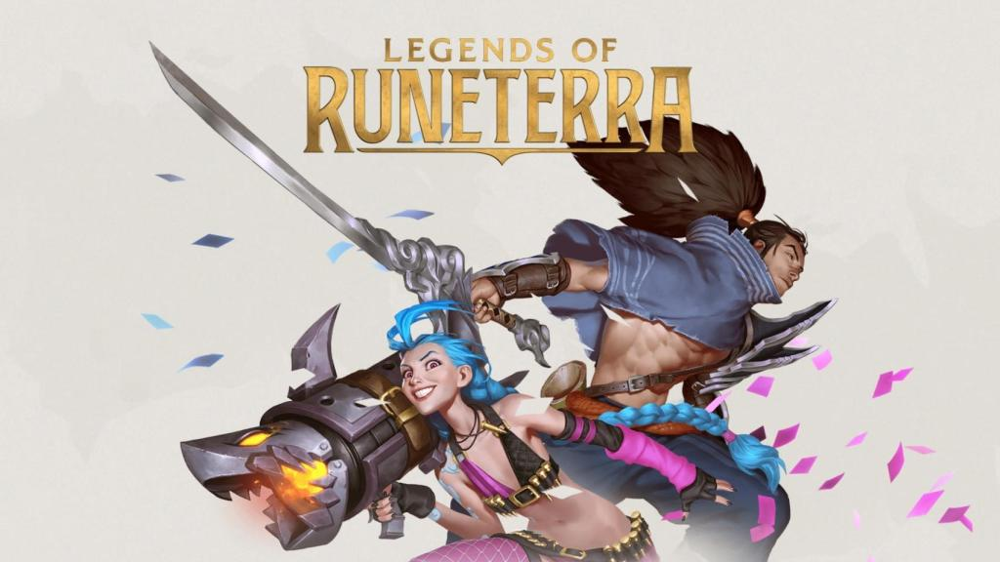

Historia de LoL
League of Legends es un videojuego multijugador de arena de batalla en línea desarrollado y publicado por Riot Games. Desde su lanzamiento en octubre de 2009, LoL ha sido un juego gratuito y se monetiza a través de la compra de elementos para la personalización de personajes y otros accesorios.

Runaterra
Runaterra es el mundo ficticio y el planeta esférico principal donde se desarrolla el universo de League of Legends. Es un mundo mágico, rico en lore, compuesto por reinos materiales y espirituales, habitado por diversas razas , artefactos destructivos responsables de gran parte de la historia.

Regiones Runaterra

Freljord

Demacia

Noxus

Jonia

Piltover

Zaun

Aguas Estancadas

Islas de la Sombra

Shurima